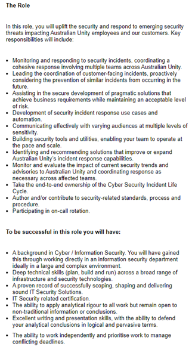

I am hoping that I might get to understand more about networking and cyber security. Information security is such a fascinating topic
and almost sounds like something out of an old hacker movie. Right now, I am looking at a
Cyber Security Analyst
position as my end goal.
A cyber security analyst monitors networks and responds to security breaches or attacks, sets up protection against attacks,
creates documentation and training material regarding best practices to prevent security breaches, and works closely with company management
to maintain as high a level of security as possible while maintaining an easy-to-use workplace.
Some of the skills or qualifications necessary for this position include: